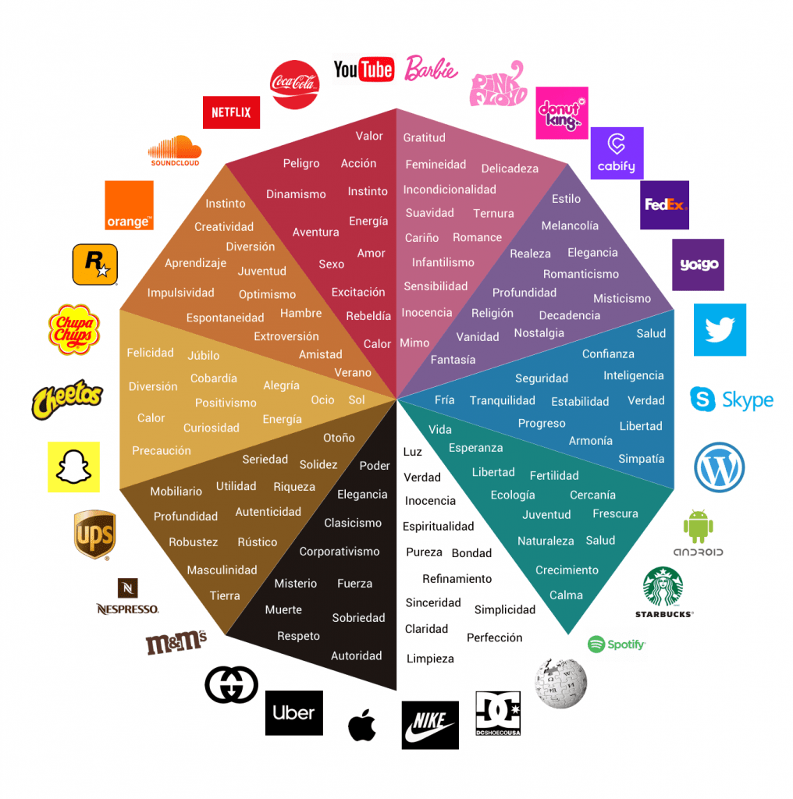
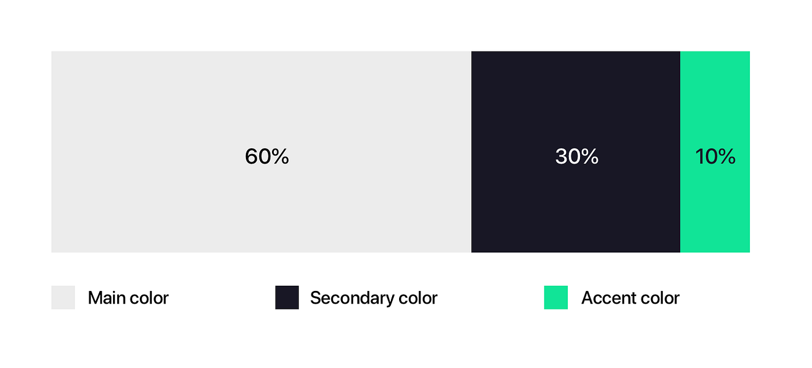
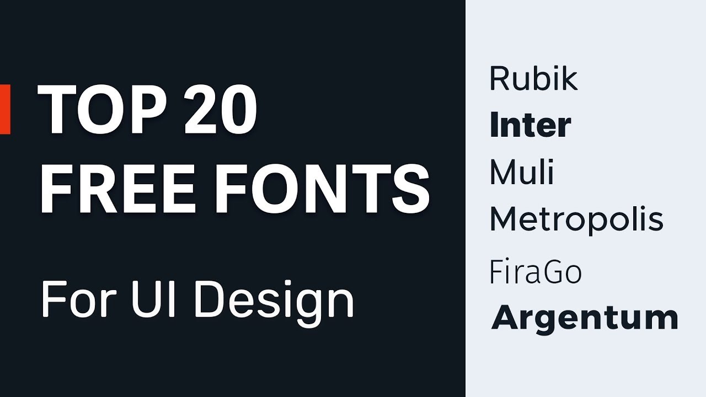
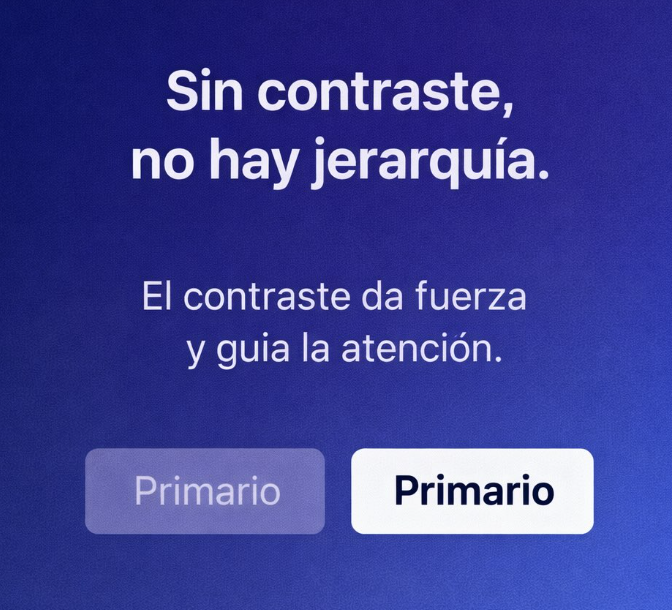

Color y Letra
Cómo el color y la tipografía mejoran una interfaz
Psicología del color
Cada color transmite una emoción: el azul da confianza, el rojo urgencia y el verde calma. Elegirlos con intención guía la atención de quien usa tu sitio.


Cómo elegir una paleta
Una regla útil es 60-30-10: 60% color base, 30% color secundario y 10% color de acento para botones y enlaces. Menos colores, más coherencia.
Tipografías legibles
Para texto largo, usa fuentes sin serifa como Arial o Verdana, con un tamaño mínimo de 16px y buen espacio entre líneas. Combina máximo dos tipografías.


Contraste y accesibilidad
El texto debe contrastar con su fondo para que todas las personas lo lean. Las pautas WCAG piden una relación de al menos 4.5:1 para texto normal.